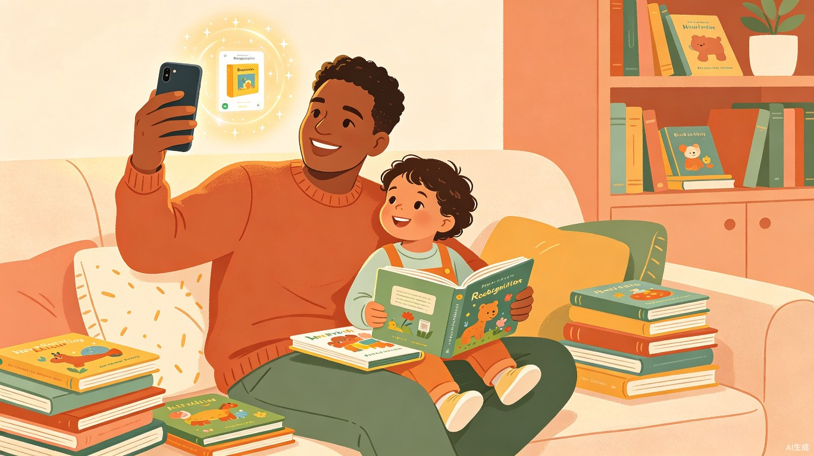
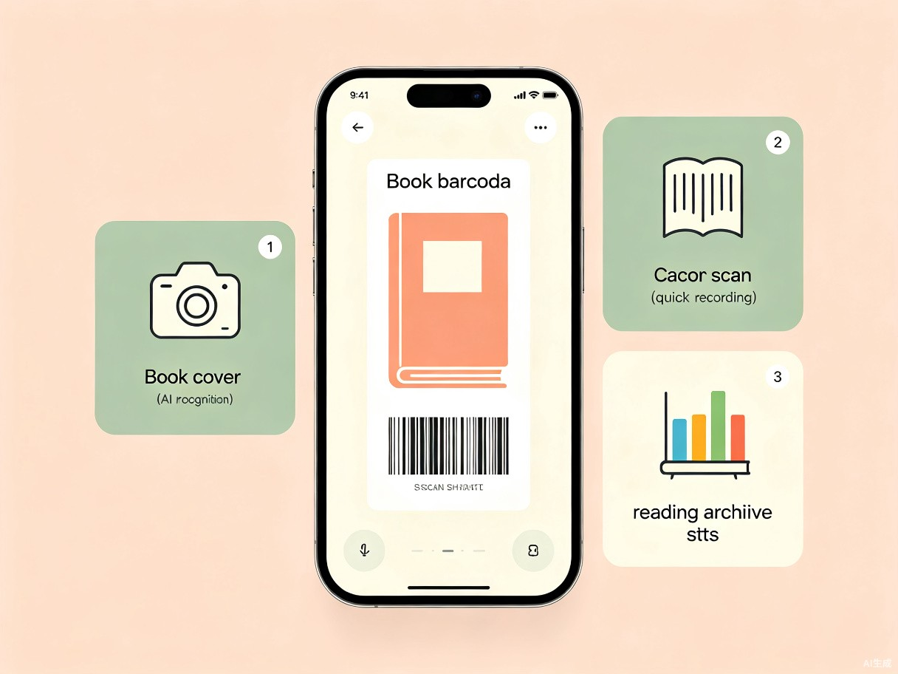
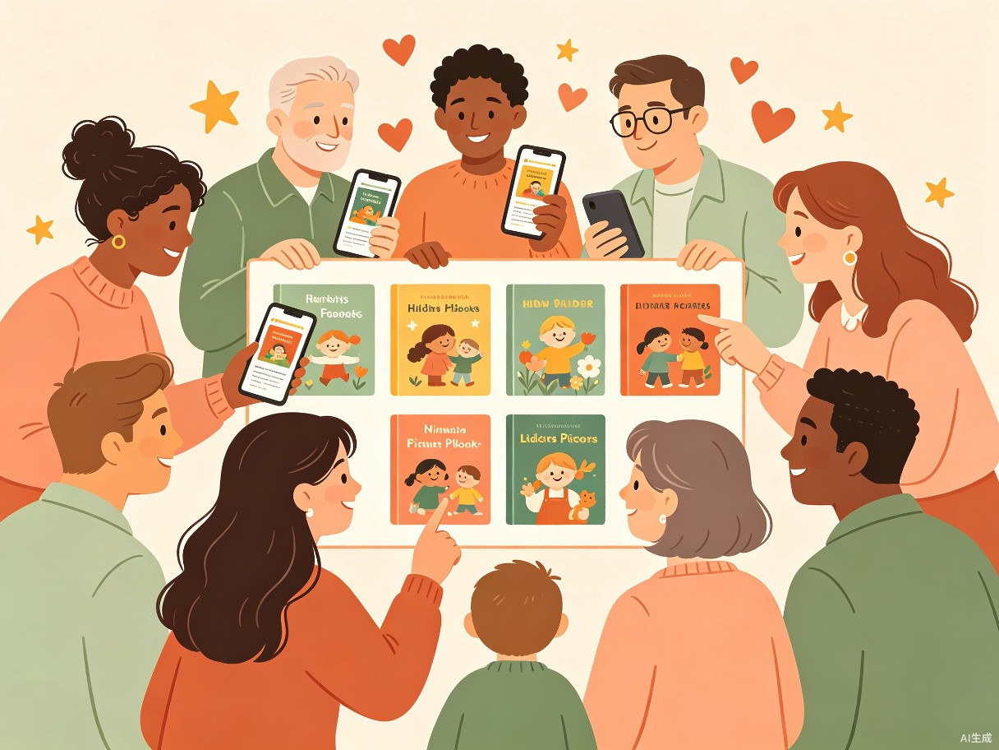

童年阅迹
AI 智能绘本阅读记录助手

创意名称与创意介绍
童年阅迹 —— 一个基于 AI 图像识别与条码扫描技术的微信小程序，帮助有 0-6 岁儿童的家庭几秒钟内完成绘本录入和阅读记录，让家长从繁琐的手工登记中解放出来，用更多时间陪伴孩子阅读。
想解决什么问题
很多家庭会为孩子购买大量绘本，但随着绘本数量逐渐积累到数百本，家长很难记住买过哪些、读过哪些、读了多少遍。目前很多家长仍然使用纸质表格或 Excel 手动登记，每读一本就要记书名、日期等信息，费时费力，也很难长期坚持。我希望用 AI 图像识别加扫码技术，把"录入"和"记录"这两个动作都压缩到几秒钟，让家长省下时间多陪孩子读一页书。
为什么会想到做这个
直接原因就是我家自己的需求。女儿两岁多，家里绘本已经攒了 300 多本，媳妇每次读完都要手动填表格做阅读日志，看着她一笔一笔地记，我就想：拍照就能认出书、扫个码就能记一条，为什么还要手动写？做这个工具的初衷很简单——让我家更轻松，也想让其他有同样烦恼的家庭也轻松一点。
大概是什么产品
微信小程序，核心功能就三件事：
拍封录入
对着绘本封面拍一张照，AI 自动识别书名、作者、出版社等信息，同时录入条码，一键入库。支持自动填充与手动纠错。
扫码记录
日常阅读后打开小程序扫一下绘本条码，自动生成一条阅读记录（日期、次数等），10 秒搞定。无条码绘本支持搜索书名。
绘本档案
查看孩子的完整阅读历史、阅读总量、偏好统计，形成成长轨迹。可以分享自家绘本单，也可浏览其他家长的真实推荐。

目标用户及痛点
面向哪些用户
在什么场景下使用
- 入库 新绘本入库：网购或书店买回来的绘本，拍照一扫自动建档
- 打卡 日常阅读打卡：睡前读完一本，掏出手机扫码记一条，10 秒搞定
- 复盘 复盘阅读情况：周末翻看孩子的阅读月报，了解最近读了什么、偏好是什么
- 交流 分享交流：把自家的高分绘本单分享到社区，也看看别的家长推荐了什么好书
当前痛点
买重了才知道
绘本越买越多，逛书店时根本记不清家里有没有，经常买重复。
记着记着就放弃了
手工填表太麻烦，大部分家长坚持不了几个月就放弃了，阅读记录断断续续。
看不到成长线
零散的记录堆在 Excel 里，没法直观呈现孩子一年读了多少书、兴趣有什么变化。
推荐靠碰运气
想给娃挑新书，主要靠朋友随口推荐或电商平台爆款，缺少真实、系统的家长口碑参考。
价值与意义
提升家庭阅读效率
通过 AI 识别 + 扫码记录，将传统手工登记从"每本几分钟"压缩到"每本几秒钟"。录入和打卡的门槛降到最低，家长才有可能真正坚持下来，形成完整的阅读档案。
促进儿童阅读习惯培养
长期积累的阅读数据可以帮助家长发现孩子的兴趣变化——比如从认知绘本转向科普绘本、从亲子共读转向自主翻阅。这些数据不是冰冷的统计，而是孩子成长过程中一条真实的"阅读成长线"。
构建家长绘本交流社区
每个家庭的绘本架都是一份精心筛选的书单。我们不会把社区设计成传统的 UGC 论坛，而是让 AI 先生成基础绘本知识库（书名、简介、适读年龄等），再通过用户真实阅读行为沉淀内容，自然形成一个高质量、可信赖的绘本推荐网络——不是营销号推的"爆款书单"，而是"我家娃翻了 20 遍还看不腻"的真实口碑。

创意可行性分析
技术方案与实现路径
本产品基于微信小程序开发，核心技术栈包括：
- 1 微信小程序原生扫码能力：调用小程序内置扫码组件，支持 ISBN 条码快速识别。
- 2 AI 图像识别：通过绘本封面拍照，调用第三方 AI 视觉识别接口，自动提取书名、作者、出版社等元信息，识别结果支持多候选展示和手动纠错。
- 3 绘本知识库：由 AI 自动生成基础绘本信息（书名、简介、适读年龄等），再通过用户真实阅读数据持续丰富，形成真实的绘本推荐体系。
- 4 数据统计与可视化：基于阅读记录生成阅读报告，展示阅读量、兴趣偏好、成长趋势等。
关键问题与应对方案
绘本封面识别准确率：AI 识别结果支持多候选展示，用户可从候选列表中选择正确结果；识别失败时支持手动输入，确保任何情况都能顺利录入。
无条码绘本处理：对于进口绘本、自制绘本、赠品绘本等无标准条码的情况，提供搜索书名快速定位的兜底方案，确保所有绘本都能被管理和记录。
用户留存与活跃度：在产品中设计阅读提醒/打卡功能，帮助家长养成坚持记录的习惯，同时也能将更多家庭的真实阅读数据沉淀到平台中。
社区冷启动：不采用传统 UGC 论坛模式，而是由 AI 生成基础绘本知识库填充内容，再通过用户真实阅读行为自然沉淀推荐内容，早期通过种子用户运营打磨基础内容。
成本控制：优先选择具有免费调用额度的 AI 识别服务，将自费成本压到最低。后期可通过广告收入、品牌赞助等方式实现可持续运营。